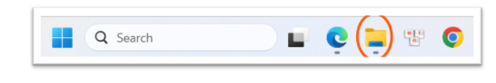
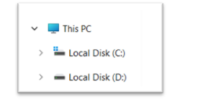

Bài 1: Máy tính và các thiết bị ngoại vi — Thao tác cơ bản với tệp tin và thư mục
1. Giới thiệu chung & Mục tiêu
Thực hành thao tác hệ thống là bước đầu tiên để tổ chức không gian làm việc số khoa học. Bài tập này huấn luyện các kỹ năng quản trị tệp tin cơ bản trong môi trường hệ điều hành Windows, bao gồm điều hướng ổ đĩa, tạo thư mục, di chuyển, đổi tên, sao chép, và quản lý thùng rác nhằm tối ưu hóa tổ chức dữ liệu cá nhân.
2. Quy trình & Các bước thực hiện
- Khởi chạy trình quản lý tệp: Mở File Explorer bằng tổ hợp phím
Windows + Ehoặc nhấn trực tiếp vào biểu tượng thư mục màu vàng trên taskbar. - Truy cập không gian làm việc: Định vị ổ đĩa dữ liệu (ví dụ: ổ D: hoặc E:). Trong trường hợp máy tính chỉ có một phân vùng duy nhất, truy cập thư mục
Documents. - Xây dựng cấu trúc thư mục chính: Tạo thư mục làm việc cá nhân có tên định dạng chuẩn
ThucHanh_NguyenBaNhat. - Quản lý tệp tin văn bản:
- Tạo tệp ghi chú mới
GhiChu.txtthông qua chuột phải ->New->Text Document. - Thực hiện đổi tên tệp (Rename) thành
GhiChuQuanTrong.txt.
- Tạo tệp ghi chú mới
- Phân chia cấu trúc phân cấp (Hierarchical Structure): Tạo thư mục con tên là
TaiLieunằm bên trong thư mục cá nhân chính. - Sao chép dữ liệu (Copy & Paste): Nhân bản tệp
GhiChuQuanTrong.txttừ thư mục gốc vào thư mục conTaiLieubằng tổ hợp phímCtrl + CvàCtrl + V. - Di chuyển dữ liệu (Cut & Paste): Tạo tệp
DiChuyen.txtở thư mục gốc, sử dụng phím tắtCtrl + XvàCtrl + Vđể chuyển tệp vào thư mục conTaiLieumà không giữ lại bản gốc. - Xóa tệp tin và Khôi phục:
- Xóa tệp
GhiChuQuanTrong.txttại thư mụcTaiLieugửi vào Recycle Bin. - Thực hiện xóa vĩnh viễn tệp
DiChuyen.txtbằng tổ hợp phímShift + Delete. - Mở Recycle Bin trên Desktop, tìm tệp
GhiChuQuanTrong.txtvà nhấnRestoređể khôi phục tệp về thư mục cũ.
- Xóa tệp
3. Hình ảnh phân tích & Thiết kế hệ thống

Hình 1.1: Phân tích cấu trúc thư mục ThucHanh_NguyenBaNhat trong File Explorer

Hình 1.2: Thiết lập tệp tin văn bản và thực hiện thao tác đổi tên
Hình 1.3: Tổ chức thư mục con và thực hiện các thao tác di chuyển dữ liệu
4. Bài học kinh nghiệm
Việc nắm rõ các phím tắt hệ thống (Ctrl + C, Ctrl + X, Ctrl + V, Shift + Del) giúp tăng tốc độ thao tác dữ liệu lên đáng kể. Việc tổ chức thư mục khoa học ngay từ đầu ngăn ngừa thất lạc tài liệu học tập và giúp quản lý dung lượng ổ cứng hiệu quả.
5. Minh chứng học tập
Báo cáo chi tiết và đầy đủ của Bài tập 1 dưới dạng PDF có thể xem hoặc tải về tại đây: 📄 Báo cáo Bài 1 (Bai1.pdf)
_80d5d9b0c937e09552dcafcce8f8a5b0e832713e.png)
_13f76d329a7dc441f8fa4ffda34621fa7b4040cb.png)